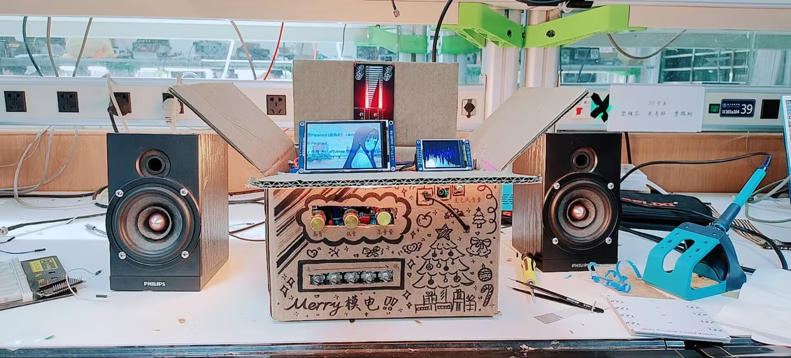
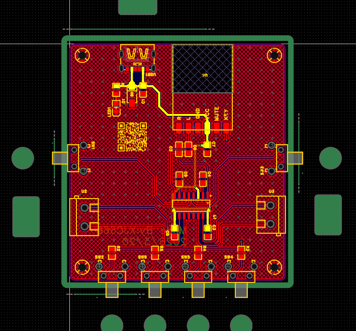
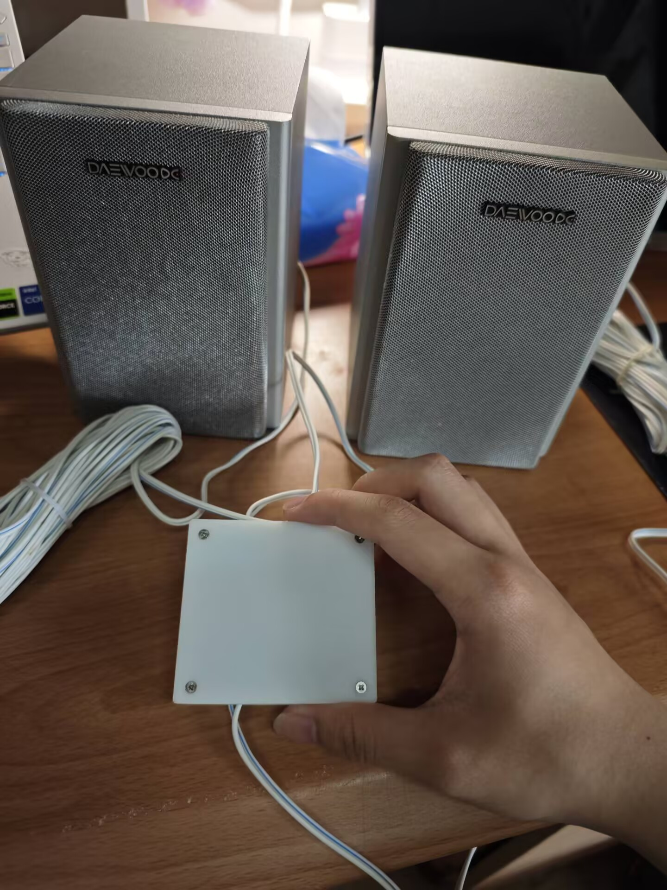

因为模电大作业做过一个，但是此物太庞大了，如下图。放在桌面上太占位置了，我一直想做一个小巧的桌面蓝牙音响，但是之前要么是太忙了，要么就是太懒了，一直没有落地，正好最近有点闲，就把这件事完成了。

怎么样，虽然效果很厉害，但是非常大，很占位置啊1. 项目方案设计
一开始想的还是比较复杂吧，功放想延续之前的，上LM1875这种猛家伙，蓝牙也想上ESP32，到时候直接编写代码，但是好像不符合小巧的预期。最后查了一点资料，还是决定用MH-M18蓝牙模块作为蓝牙通信模块，这个模块集成度还挺高的。功放采用了PAM8407，当然还是奔着外围电路简单去的，功率大概是2W多一点，能带动我的喇叭（PS:喇叭淘宝买的10块钱的便宜货，还是不错的，够我用了）。
2. 硬件设计与焊接
整体设计是在嘉立创上实现的，从绘制原理图到画PCB，具体过程不多说，比较简单，板子也画的比较简陋，如下图。但是做出来后效果还是非常nice的啊，我以为接上去喇叭会有点底噪呢，结果根本没有，可以可以。

蓝牙音响的 PCB 图3. 外壳设计与组装
好的硬件需要一个漂亮的外壳。我用嘉立创设计了一个3D外壳，只会简单的，其他的建模软件不会，有机会还是得学学的。组装的过程就比较解压了，最后成品还挺有成就感的。

蓝牙音响的成品图最终的成品效果我很满意，放在桌面上非常和谐。以上就是这个项目的全记录。